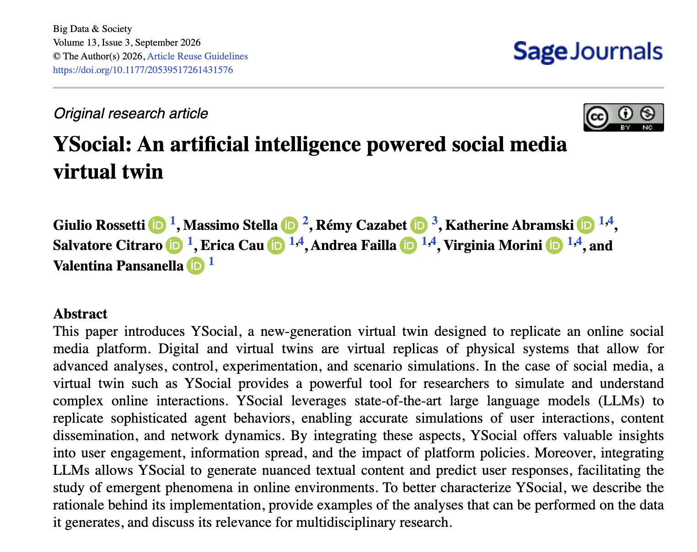

Finally Published: Read about YSocial in Big Data & Society
Some papers take longer journeys than others.
After many months of reviews, revisions, acceptance (in early February), proofs, and an unexpectedly long (excessively long) production process, we’re finally happy to share that
“YSocial: An artificial intelligence powered social media Virtual Twin”
has been officially published in Big Data & Society!

Read the paper online, download the PDF, and check out the supplementary materials.
Or, if you prefer, listen to the podcast where we discuss the paper and its implications for computational social science.
And… don’t forget to cite it if you use YSocial in your research:
@article{doi:10.1177/20539517261431576,
author = {Giulio Rossetti and Massimo Stella and Rémy Cazabet and Katherine Abramski and Salvatore Citraro and Erica Cau and Andrea Failla and Virginia Morini and Valentina Pansanella},
title ={YSocial: An artificial intelligence powered social media virtual twin},
journal = {Big Data \& Society},
volume = {13},
number = {3},
pages = {20539517261431576},
year = {2026},
doi = {10.1177/20539517261431576},
URL = {https://doi.org/10.1177/20539517261431576},
}
Why YSocial?
Over the last decade, computational social science has become increasingly dependent on large observational datasets. While these data have transformed our understanding of online behavior, they come with important limitations: they describe what happened, but they cannot safely answer what would happen if…
- What if a recommendation algorithm changed?
- What if moderation policies were different?
- What if users with specific behavioral traits became more or less active?
Answering these questions requires moving beyond descriptive analytics toward realistic social simulations.
YSocial was created precisely with this goal.
A Virtual Twin for Social Media
YSocial is a modular social media virtual twin where AI agents interact inside a realistic online platform.
Unlike traditional agent-based models that rely on handcrafted behavioral rules, YSocial leverages Large Language Models (LLMs) to drive user decisions and generate content. The result is a simulation environment where heterogeneous agents can:
- Publish posts and comments
- React to content
- Engage in realistic conversations
- Experience recommendation algorithms
- Generate complex collective behaviors
The platform combines the flexibility of agent-based simulation with the linguistic and reasoning capabilities of modern LLMs, providing researchers with a powerful sandbox for studying online social systems.
Built for Research
One of the main design goals behind YSocial was reproducibility.
The platform is modular, extensible, and model-agnostic. Researchers can plug in different language models—commercial or open-weight—modify recommendation strategies, define custom agent populations, and simulate a wide variety of online scenarios.
Rather than reproducing a single social platform, YSocial provides a flexible infrastructure for studying how individual behaviors give rise to collective phenomena.
Potential applications include:
- Information diffusion
- Polarization
- Online debates
- Content moderation
- Recommender systems
- Synthetic data generation
- Policy evaluation before deployment
Looking Forward
This publication represents only the first step.
We’re already extending YSocial with richer behavioral models, improved recommendation mechanisms, heterogeneous cognitive profiles, and larger-scale simulations. The broader vision is to build increasingly realistic Social Virtual Twins capable of supporting computational social science, AI safety research, and policy experimentation.
Stay tuned for more updates as we continue to push the boundaries of social simulation.
Acknowledgments
This work would not have been possible without the fantastic collaboration among researchers from:
- CNR-ISTI
- University of Pisa
- University of Trento
- Université Claude Bernard Lyon 1
We’re excited to finally see YSocial officially published—and even more excited to continue building what comes next.
If you’re interested in social simulation, LLM agents, computational social science, or virtual twins, we’d love to hear your thoughts.
Happy reading!